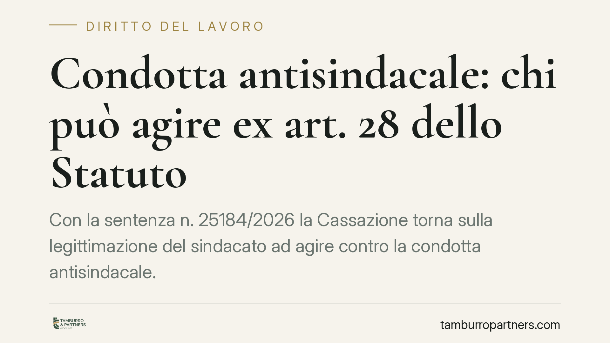

Condotta antisindacale: chi può agire ex art. 28 dello Statuto
Con la sentenza n. 25184/2026 la Cassazione torna sulla legittimazione del sindacato ad agire contro la condotta antisindacale. Il punto centrale: non serve essere il sindacato più rappresentativo per accedere alla tutela dell'art. 28 dello Statuto dei Lavoratori. Una precisazione che allarga il perimetro dei soggetti abilitati e incide sulle strategie difensive del datore di lavoro.

Il fatto
Un'organizzazione sindacale agisce in giudizio contro un datore di lavoro lamentando una condotta antisindacale, cioè un comportamento diretto a limitare o impedire l'esercizio della libertà e dell'attività sindacale. Il datore eccepisce il difetto di legittimazione: quel sindacato, a suo dire, non avrebbe i requisiti di rappresentatività necessari per attivare lo strumento dell'art. 28.
La Corte respinge l'impostazione. La legittimazione ad agire per la repressione della condotta antisindacale non presuppone la maggiore rappresentatività dell'organizzazione ricorrente.
Inquadramento normativo
Lo snodo è nel testo dell'art. 28 della L. 300/1970 (Statuto dei Lavoratori). La norma attribuisce la legittimazione agli "organismi locali delle associazioni sindacali nazionali che vi abbiano interesse". Non richiede, cioè, che il sindacato sia comparativamente più rappresentativo o firmatario di contratti collettivi applicati in azienda.
È un profilo che va tenuto distinto dall'art. 19 dello stesso Statuto, il quale disciplina la costituzione delle rappresentanze sindacali aziendali (RSA) e fissa requisiti più stringenti, legati alla partecipazione alla contrattazione collettiva. Confondere i due piani è l'errore ricorrente: i presupposti per costituire una RSA sono altra cosa rispetto ai presupposti per agire contro la condotta antisindacale.
La Cassazione, con la sentenza n. 25184/2026, ribadisce questa autonomia. Ciò che conta ai fini dell'art. 28 è che l'associazione abbia diffusione e struttura a livello nazionale e un interesse concreto e attuale alla repressione del comportamento denunciato. La verifica si sposta quindi dal grado di rappresentatività alla sussistenza di un interesse qualificato nella specifica vicenda.
Implicazioni pratiche
Per il datore di lavoro, la pronuncia riduce lo spazio delle eccezioni preliminari. Non è sufficiente contestare che il sindacato ricorrente sia "minore" o non firmatario del contratto applicato in azienda per bloccare l'azione sul nascere. Se l'organizzazione ha dimensione nazionale e dimostra un interesse concreto, il giudice entrerà nel merito della condotta contestata.
Questo significa che il contenzioso si gioca sui fatti: sull'esistenza o meno di un comportamento che comprima l'attività sindacale, non sulla "patente" di rappresentatività di chi agisce. Il perimetro dei soggetti abilitati resta ampio, e con esso il rischio di iniziative giudiziarie.
Per il sindacato, la conferma è utile: anche organizzazioni non maggioritarie possono presidiare i diritti dei propri iscritti e la propria libertà d'azione in azienda, purché radicate a livello nazionale.
Va ricordato che il procedimento ex art. 28 è a rito speciale e sommario, con tempi rapidi e provvedimenti immediatamente esecutivi. Il datore che riceve un ricorso ha finestre difensive strette. Preparare per tempo la documentazione delle scelte organizzative e delle relazioni sindacali diventa decisivo.
Cosa fare in concreto
- Verificate la natura del ricorrente: accertate se l'organizzazione ha struttura nazionale, perché su questo — e non sulla rappresentatività maggioritaria — si misura la legittimazione ex art. 28.
- Documentate le decisioni aziendali: conservate verbali, comunicazioni e criteri delle scelte che toccano i rapporti sindacali, per dimostrare l'assenza di intento discriminatorio o di ostacolo all'attività sindacale.
- Distinguete i piani normativi: non confondete i requisiti dell'art. 19 (costituzione RSA) con quelli dell'art. 28 (azione antisindacale); sono presupposti diversi e vanno gestiti separatamente.
- Attivatevi subito in caso di ricorso: i tempi del procedimento sommario sono brevi; consigliamo di predisporre memoria difensiva e prove senza attendere l'udienza.
- Rivedete le relazioni sindacali: una gestione trasparente e tracciabile del rapporto con tutte le sigle presenti riduce il rischio di contestazioni.
---
*Contributo informativo a cura di Tamburro & Partners - Avv. Giuseppe Tamburro. Non costituisce parere legale.*
Ogni storia di lavoro ha i suoi tempi.
Se gestisci HR e vuoi un confronto su contenzioso, ispezioni o licenziamenti, scrivi allo studio. Ti rispondiamo entro un giorno lavorativo.